weekend
Informacje o obiekcie
Podstawowe informacje na temat obiektu, który rozkładasz na świecie
visibility
Nazwa obiektu:
[ Blat ]
language
Obiekt globalny:
[ Nie ]
zoom_out_map
Sterowanie
Sterowanie obiektem odbywa się poprzez ruchy myszką, rotacją możemy manipulować za pomocą strzałek widocznych poniżej
